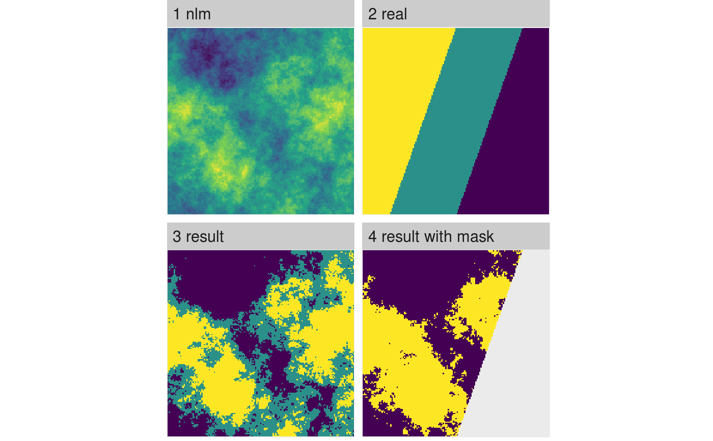

Classify continuous landscapes into landscapes with discrete classes
util_classify(x, n, weighting, level_names, real_land, mask_val) # S3 method for RasterLayer util_classify(x, n = NULL, weighting = NULL, level_names = NULL, real_land = NULL, mask_val = NULL)
| x | raster |
|---|---|
| n | Number of classes |
| weighting | Vector of numeric values that are considered to be habitat percentages (see details) |
| level_names | Vector of names for the factor levels. |
| real_land | Raster with real landscape (see details) |
| mask_val | Value to mask (refers to real_land) |
RasterLayer
Mode 1: Calculate the optimum breakpoints using Jenks natural
breaks optimization, the number of classes is determined with n.
The Jenks optimization seeks to minimize the variance within categories,
while maximizing the variance between categories.
Mode 2: The number of elements in the weighting vector determines the number of classes in the resulting matrix. The classes start with the value 1. If non-numerical levels are required, the user can specify a vector to turn the numerical factors into other data types, for example into character strings (i.e. class labels). If the numerical vector of weightings does not sum up to 1, the sum of the weightings is divided by the number of elements in the weightings vector and this is then used for the classificat#' .
Mode 3: For a given 'real' landscape the number of classes and the weightings are extracted and used to classify the given landscape (any given weighting parameter is overwritten in this case!). If an optional mask value is given the corresponding class from the 'real' landscape is cut from the landscape beforehand.
# \dontrun{ # Mode 1 util_classify(fractal_landscape, n = 3, level_names = c("Land Use 1", "Land Use 2", "Land Use 3"))#> class : RasterLayer #> dimensions : 150, 150, 22500 (nrow, ncol, ncell) #> resolution : 1, 1 (x, y) #> extent : 0, 150, 0, 150 (xmin, xmax, ymin, ymax) #> crs : NA #> source : memory #> names : layer #> values : 1, 3 (min, max) #> attributes : #> ID Categories #> 1 Land Use 1 #> 2 Land Use 2 #> 3 Land Use 3 #># Mode 2 util_classify(fractal_landscape, weighting = c(0.5, 0.25, 0.25), level_names = c("Land Use 1", "Land Use 2", "Land Use 3"))#> class : RasterLayer #> dimensions : 150, 150, 22500 (nrow, ncol, ncell) #> resolution : 1, 1 (x, y) #> extent : 0, 150, 0, 150 (xmin, xmax, ymin, ymax) #> crs : NA #> source : memory #> names : layer #> values : 1, 3 (min, max) #> attributes : #> ID Categories #> 1 Land Use 1 #> 2 Land Use 2 #> 3 Land Use 3 #># Mode 3 real_land <- util_classify(gradient_landscape, n = 3, level_names = c("Land Use 1", "Land Use 2", "Land Use 3")) fractal_landscape_real <- util_classify(fractal_landscape, real_land = real_land) fractal_landscape_mask <- util_classify(fractal_landscape, real_land = real_land, mask_val = 1) landscapes <- list( '1 nlm' = fractal_landscape, '2 real' = real_land, '3 result' = fractal_landscape_real, '4 result with mask' = fractal_landscape_mask ) show_landscape(landscapes, unique_scales = TRUE, nrow = 1)#> Warning: Removed 1196 rows containing missing values (geom_raster).# }